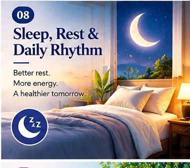
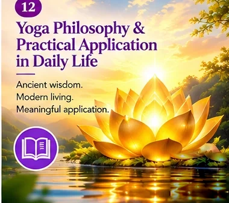

Twelve ways to begin with your present reality.
When familiar habits, repeated thoughts and difficult circumstances begin to limit your actions, even simple decisions can feel overwhelming.
Lifestyle for Lifetime™ helps you discover clarity in your present reality. Through awareness, observation, knowledge, acceptance and practical self-regulation, we guide you to recognise the patterns influencing daily life and strengthen conscious action, one present moment at a time.
Our holistic lifestyle coaching and training supports purposeful living across physical, mental, emotional, social and spiritual dimensions—including physical transformation when it is relevant to your goals. The purpose is to build independence, engage more clearly with responsibilities and move towards meaningful life goals.
Freedom grows through awareness. Independence grows through practice. Purity of thought grows through clarity.
Choose a starting point. Each area connects real-life experiences with observation, relevant learning and practical training.
Small patterns can influence larger possibilities.
When attention becomes scattered, daily duties pile up, or familiar emotions repeatedly shape decisions, progress can feel difficult. We explore what is actually happening, what can be understood, and what may be practised in your real life.
Start with the area that matters to you. Your learning can extend to other connected aspects as your awareness and capacity grow.
Discuss your present needsFear Awareness & Management
Does uncertainty keep you from taking a needed step? Fear can draw attention to risks, but it can also become a familiar pattern of hesitation.

A difficult conversation, an unfamiliar opportunity or a decision with uncertain outcomes may leave you rehearsing possibilities and postponing action.
Notice what actually requires protection, what remains uncertain and where assumptions are guiding your response. Use present-moment observation and careful evaluation rather than demanding that fear disappear.
Before avoiding one important task, name the concern, identify what is known and choose one safe, proportionate next step.
Stress Observation & Management
When responsibilities keep accumulating, which pressures are real—and which responses are becoming habitual?

Long working hours, unfinished tasks, family needs and limited rest can leave you reacting throughout the day without identifying what matters most.
Observe demands, physical signals, time use, recoverable routines and recurring reactions. Learn to distinguish what can be organised, shared, postponed or addressed with support.
At one pressured point in your day, record the actual demand, your response and a realistic action or recovery break.
Anger Acceptance & Management
What happens between feeling anger and choosing how to respond?

A missed expectation, perceived disrespect or repeated disagreement can trigger a quick reaction that later affects trust, communication and decisions.
Accept that anger is present without treating every impulse as an instruction. Observe triggers, bodily sensations, interpretations and the consequences of familiar responses.
When anger appears, create a safe pause, recognise the underlying concern and consider a response that respects yourself and others.
Mental Clarity & Emotional Regulation
Are repeated thoughts and emotional patterns taking your attention away from what matters now?

You may recognise a goal yet get caught in overthinking, shifting moods, competing priorities or familiar reactions that interrupt consistent action.
Observe the present moment, identify repeating patterns and separate facts, feelings and assumptions. Connect awareness with clarity, meaningful goals and appropriate decisions.
Write one recurring thought, the situation that activates it and a practical response consistent with your present responsibilities.
Mindfulness, Meditation & Breath
A restless moment is not always a demand to control your thoughts. What might observation reveal?

You may move from one task to the next without noticing breathing, tension, attention or the effect of repeated thinking on your choices.
Begin with natural breath observation, comfortable attention and appropriate mindfulness. Build towards reflective journaling and meditation suited to your readiness.
Notice a few natural breaths before a routine transition, then observe what thought or feeling is present—without forcing the breath or suppressing thought.
Relationships, Meaning & Direction
Do your relationships receive the same attention as the expectations you place upon them?

Family, friendships and social responsibilities can become difficult when needs remain unspoken, boundaries are unclear or responses follow old patterns.
Recognise your own expectations while considering what others may need. Explore listening, communication, mutual responsibility, personal values and meaningful choices.
Before a difficult exchange, identify your need, the other person’s possible perspective and one respectful way to communicate.
Professional Focus & Daily Duties
You may know what needs to be done—but what keeps important work unfinished?
Deadlines, interruptions, leadership obligations and competing family responsibilities can split attention and leave decisions unsettled.
Observe the pattern between intention, priority and action. Practise realistic planning, clear communication, rest and follow-through without treating productivity as your only measure of worth.
Choose one meaningful duty, define the first action and reflect on what helped or prevented completion.
Sleep, Rest & Daily Rhythm
How does the way you end today influence the energy you bring to tomorrow?

Irregular sleep, late work, screen habits or unstructured evenings can make mornings more difficult and reduce opportunities for recovery.
Observe sleep and wake patterns, daylight exposure, suitable activity, recovery needs and practical circadian routines while respecting medical advice.
Keep a simple seven-day observation of bedtime, waking, energy and evening choices. Look for workable patterns rather than chasing a perfect schedule.
Food Awareness & Weight Management
Is your food routine supporting your actual needs, or following a pattern you rarely stop to question?
You may struggle with weight, inconsistent meals, rushed eating or nutrition advice that is hard to sustain alongside work and family life.
Explore hunger, food access, nutritional adequacy, meal patterns, movement and realistic preferences using locally available resources. Guidance is individualised and does not require the founder’s personal dietary choices.
Observe one meal: your level of hunger, pace, satisfaction and how the routine fits into the rest of your day.
Yogic Cleansing & Mindful Living
How can traditional yogic practice become a thoughtful part of everyday living?

Some people are drawn to kriyas, breath practices or yogic discipline but are unsure what is appropriate for their body, experience and current circumstances.
Learn the context of selected traditional yoga practices—including kriya, asana, pranayama and reflection—through suitable teaching, progression and safety limits.
Start with an ordinary daily habit: notice how posture, attention and natural breathing relate to comfort and practice readiness.
Yoga, Fitness & Physical Transformation
What physical capabilities would make everyday life and personal goals more achievable?
Strength, mobility, fitness, posture, recovery or a performance goal may matter, yet generic routines can overlook individual history, comfort and limitations.
Combine appropriately progressive movement, fitness principles, yoga practice, recovery, nutrition awareness and self-observation according to current ability.
Choose a manageable movement goal and record how your body responds before increasing duration or intensity.
Yoga Philosophy & Practical Application in Daily Life
Can an idea become useful when it changes how you participate in ordinary life?

Questions about purpose, responsibility, identity, values and existence may arise alongside everyday concerns—not instead of them.
Explore appropriate yoga philosophy and authentic classical traditions alongside observation, acceptance, mindful action and reflection. Study becomes relevant when it can inform present responsibilities.
Reflect on one value you hold and one ordinary action today that could express it responsibly.